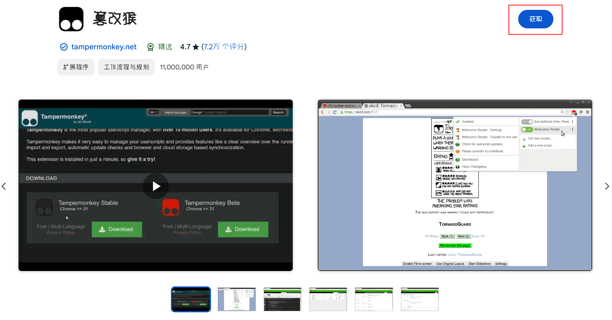

3. 使用方法

- 访问小雅平台的课程页面。
- 页面会出现下载界面，包含各种组件。
- 使用筛选、搜索或排序等功能找到你需要的文件。
- 选择单个文件下载，或勾选多个文件进行批量下载。
- 可以使用导出功能，将文件列表导出为其他格式。
如果你的浏览器还没有安装油猴插件，请点击下方链接前往安装：

使用 Konami Code(Fxxk Konami) (↑↑↓↓←→←→BA) 激活隐藏功能，包括教师信息查看和用户搜索等。
另外，连击5次控制面板中的版本号也可激活隐藏功能。
Q: 为什么有些文件无法下载？
A: 确保你能正常访问这些文件，并检查网络连接是否正常。
Q: 如何更新脚本？
A: 脚本会自动检查更新，你也可以在油猴扩展中手动检查更新。
Q: 视频文件怎么下载？
A: 脚本本身并不支持视频文件下载，如有需要，可以安装现成的其他插件。
Q: 为什么我切换到了“用浏览器下载”，还是会唤起IDM？
A: IDM会截获大多数下载请求，必要的话可以关闭IDM的浏览器插件。
Q: 支持哪些学校？
A: 只要是使用小雅的学校，理论上都支持。
Q: 为什么我切换到了“用浏览器下载”，还是会唤起IDM？
A: IDM会截获大多数下载请求，必要的话可以关闭IDM的浏览器插件。
Q: ef2 和 txt 文件是什么？怎么用？
A: 导出文件列表为 ef2 或 txt 格式，可以方便地将下载链接导入到其他下载工具中。
如果你遇到任何问题或有改进建议，请在GitHub项目页面提交issue或在油猴脚本页面留言。